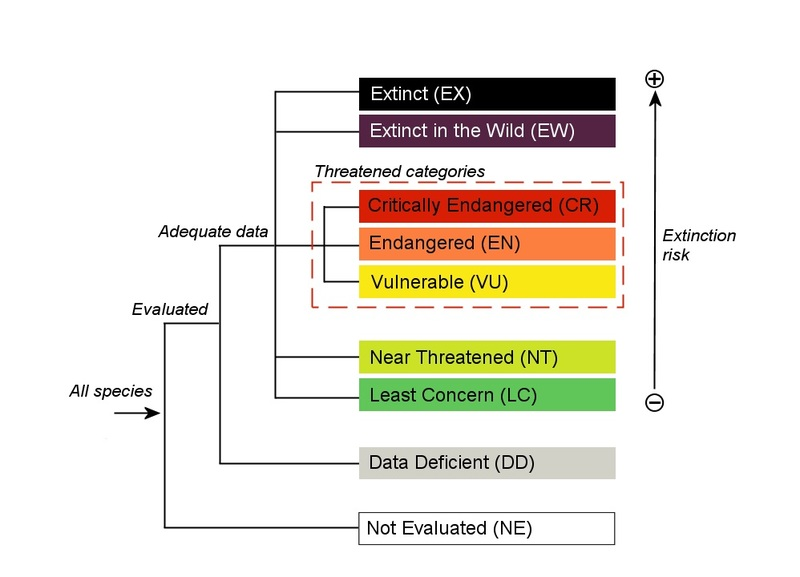

ABOUT THE IUCN
Since its creation in 1964, The International Union for Conservation of Nature's Red List of Threatened SpeciesTM has grown to become the most comprehensive source of data on the status of animal, fungal, and plant species with regard to extinction risk worldwide. The state of the world's biodiversity can be determined in large part by looking at the IUCN Red List. It is an effective instrument to guide conservation policy and action. Information regarding a species' distribution, population size, habitats and ecology, use and threats, commerce, and conservation measures are provided to aid in making conservation decisions. IUCN in general aims to support nations in mainstreaming nature into economic choices, including including the private sector in finding solutions that benefit both people and the environment.
IUCN keeps track of how climate change is affecting the environment and provides advice on ecosystem conservation and restoration to help with adaptation and mitigation.Countries or organisations create a number of Regional Red Lists that evaluate the risk of extinction for species within a given political control unit. A rigorous set of criteria is used by the IUCN Red List to assess the rate of extinction for thousands of species and subspecies. These standards apply to all species and geographical areas of the planet. Several species considered for the Red List are also essential to maintaining human health and way of life. Emphasizing the plight of such animals and fighting to ensure their survival also contributes to ensuring our own future.
OBJECTIVES
Given below are some objectives that the IUCN Red List claims to achieve:
CATEGORIES OF CLASSIFICATION
The IUCN Red List categorises species based on the following 9 criteria: